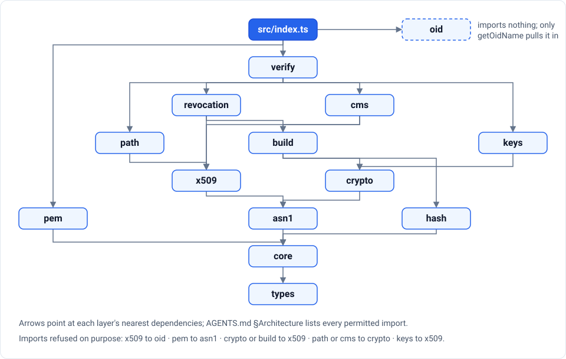

Read the certificates your software trusts.
Strictly, safely, on every runtime, without a single dependency. pkinative decodes ASN.1 DER, PEM and OIDs and parses every field and every standard extension of an RFC 5280 certificate — in plain TypeScript, for Node.js, browsers, Deno, Bun and Workers.
0.1 — pre-1.0 git tag, not on npm · reads certificates; verification arrives in 0.3Why pkinative
- Strict by defaultDER is decoded as X.690 §10–11 requires. Two encodings of one value is an ambiguity an attacker can exploit, so it is refused, not guessed at.
- Safe on hostile inputEleven named, CWE-tagged limits bound every loop; nesting is iterative; every failure is a typed error with a stable code.
- CompleteEvery RFC 5280 extension, every GeneralName form, RFC 4514 names, and RSA, EC, EdDSA, XDH and ML-DSA keys.
- Honest about profilesWhat real issuers get wrong is a diagnostic with its RFC section — never a crash, never silence.
- No cryptography it should not ownNo signing, key generation or secret arithmetic in TypeScript; verification goes through Web Crypto.
- Built for agentsMachine-readable codes, a generated API manifest, llms.txt and a human-in-the-loop governance policy.
Three calls
import { decodePem, formatDistinguishedName, getExtension, parseCertificate } from 'pkinative';
const [block] = decodePem(pemText, { label: 'CERTIFICATE' });
const cert = parseCertificate(block.bytes);
formatDistinguishedName(cert.subject); // 'CN=letsencrypt.org'
getExtension(cert, 'subjectAltName')?.names; // [{ kind: 'dNSName', value: 'cp.letsencrypt.org' }, …]
cert.diagnostics; // profile concerns, each with its RFC sectionEvery export, its signature and the errors it throws are listed in the generated API manifest; every sample in the guides runs in CI as a recipe.
Held to corpora it did not write
A blocking gate runs the built package over x509-limbo and Wycheproof, pinned by commit and SHA-256, and checks every answer against OpenSSL.
- 30 361unique x509-limbo certificates parsed or refused by the rules
- 564certificates refused, each only where limbo expects failure
- 1 530Wycheproof ECDSA vectors decoded strictly
- 0disagreements with OpenSSL on serial, validity, CA flag and fingerprint
Small, layered, tree-shakeable
Strict layers with no reverse edge, enforced from the syntax tree. A bundle that only parses certificates carries no PEM code, no hash and no OID name registry — proved on every build by npm run verify:bundle.

For AI agents
Start from the agent brief, llms.txt and llms-full.txt. Errors carry stable codes (registry), diagnostics carry their clause (registry), and the public surface is api.json. Agents that contribute work under a human-in-the-loop policy: they draft and verify, a maintainer pushes and publishes.
Origin
pkinative is the third library of the native family, after pdfnative and zipnative. It grew out of the X.509 and CMS code pdfnative wrote for PDF signatures, keeps its ideas, rewrites its parser, and leaves secret-dependent arithmetic to Web Crypto.